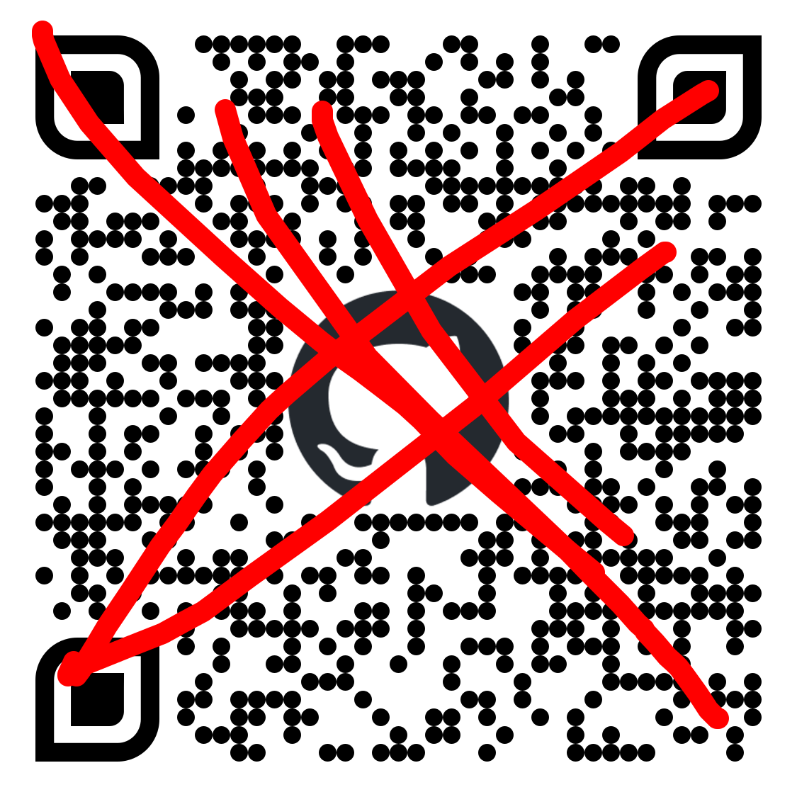
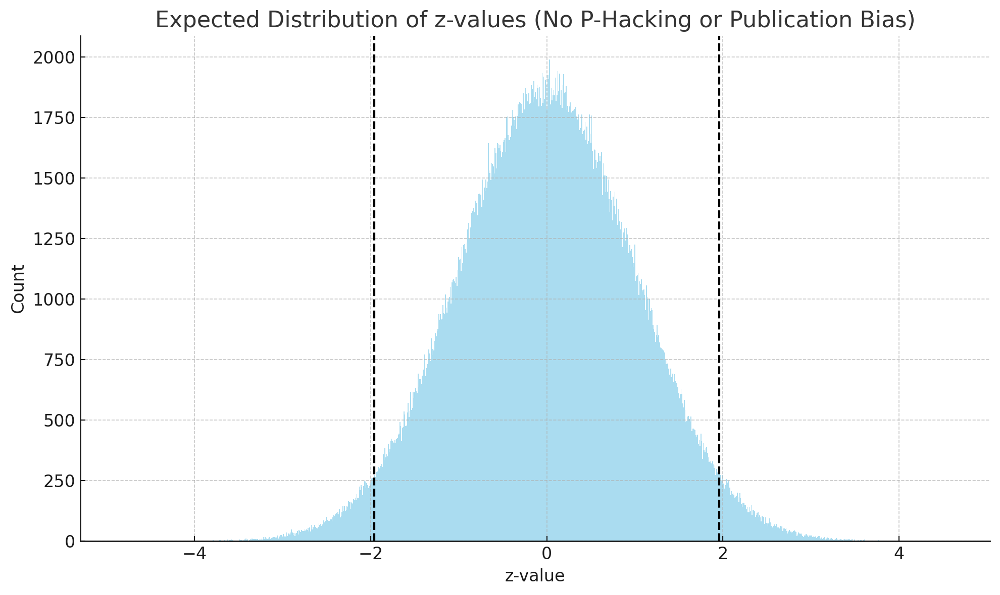
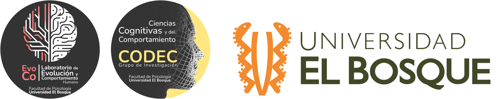

MetaCiencia: Ciencia Abierta, Reproducibilidad y Transparencia
¿Cómo enfrentamos los retos de la ciencia?
📲 Accede a las diapositivas en línea

Parte 1: Los desafíos para la credibilidad científica
Parte 1: Los desafíos para la credibilidad científica
¿Cómo se crea conocimiento?
¿Si mi gato hace más pataletas, sueño más con empanadas?
Parte 1: Los desafíos para la credibilidad científica
¿Si mi gato hace más pataletas, sueño más con empanadas?
Parte 1: Los desafíos para la credibilidad científica
P: ¿Qué porcentaje de los hallazgos publicados en psicología son estadísticamente significativos?
Parte 1: Los desafíos para la credibilidad científica
P: ¿Qué porcentaje de los hallazgos publicados en psicología son estadísticamente significativos?
R: 96%
Parte 1: Los desafíos para la credibilidad científica
P: ¿Qué porcentaje de los hallazgos publicados en psicología son estadísticamente significativos?
R: 96%
Parte 1: Los desafíos para la credibilidad científica
P: ¿Qué porcentaje de los hallazgos publicados en psicología son estadísticamente significativos?
R: 96%

Parte 1: Los desafíos para la credibilidad científica
1.1 ¿Podemos confiar en la literatura?
Hay 2 opciones:
- Estudiamos efectos con >90% de potencia y >90% de probabilidad de ser verdaderos.
1.1 ¿Podemos confiar en la literatura?
Hay 2 opciones:
- Estudiamos efectos con >90% de potencia y >90% de probabilidad de ser verdaderos.
- Existe un sesgo de publicación masivo.
Parte 1 · ¿Por qué necesitamos una Ciencia Abierta?
Desafíos actuales
- Acceso desigual al conocimiento y a la producción científica
- Crisis de replicación y resultados poco robustos
- Incentivos que favorecen “resultados positivos” y novedad
- Métodos opacos y bajo poder estadístico
Evidencias clave
- Replicability: tasas de replicación modestas y tamaños de efecto inflados
- Sesgo de publicación: sobre-representación de “hallazgos significativos”
- Prácticas cuestionables: p-hacking, HARKing, reporte selectivo
- Transparencia limitada: datos/código no compartidos, descripción incompleta
Mensaje: no es “culpa de personas”, es sistémico → necesitamos cambiar prácticas y estructuras.
El filtro de significancia
Distribuciones sesgadas por seleccionar solo p < .05
Parte 2 · Principios de la Ciencia Abierta
Más allá del Open Access
- Open Access (con matices: gold/green/diamond, costos, waivers)
- Open Data (datos FAIR, reutilización responsable)
- Open Methods (protocolos, metadatos, decisiones analíticas)
- Open Source (software libre, entornos reproducibles)
- Open Peer Review (mayor escrutinio, trazabilidad)
- Open Resources (formación y materiales abiertos)
Tip
Idea fuerza: abrir el proceso científico, no solo los PDFs.
Software libre y reproducibilidad
- Entornos con R / Python y control de versiones
- Documentos reproducibles (Quarto, R Markdown)
- Repositorios abiertos (OSF, GitHub, Zenodo)
- Pipelines auditables (scripts, session info, containers)
Parte 3 · Prerregistro (Pre-registration)
¿Qué es el prerregistro?
Especificar antes del estudio:
- Preguntas e hipótesis
- Diseño y criterios (incluye exclusión/inclusión)
- Plan de análisis (variables, modelos, decisiones)
Beneficios: transparencia, menor sesgo, claridad entre confirmatorio vs exploratorio.
¿Se puede explorar?
¡Sí! El prerregistro no prohíbe explorar:
- Documenta lo exploratorio como tal
- Puedes desviarte, explicando por qué
- El objetivo es claridad y honestidad, no rigidez
Plataformas y plantillas
- OSF Registries (p. ej., AsPredicted.org, Prereg, etc.)
- Flujos prácticos: crear borrador → completar campos → registrar (público o embargo)
- Buenas prácticas: justificar tamaño muestral, preregistrar variables y análisis
Parte 4 · Registered Reports (RRs)
¿Qué cambia con RRs?
- Revisión por pares antes de recolectar datos (Stage 1)
- Aceptación en principio (IPA) → publicación no depende del resultado
- Enfoque en calidad del diseño y plan analítico
- Reducción de sesgo de publicación y prácticas cuestionables
Modelos y ecosistema
- Revistas con formato RR (300+ y creciendo)
- PCI RR: plataforma journal-agnostic (gratis, abierta); tras IPA eliges entre múltiples revistas
- Adecuado para estudios confirmatorios; exploratorios siguen teniendo su lugar
Parte 5 · De la teoría a la acción: Semillero MetaCiencia
¿Qué es MetaCiencia?
Un espacio transdisciplinar para formar estudiantes como agentes de cambio en:
- Ciencia Abierta (más allá del OA)
- Reproducibilidad computacional
- Ética e integridad científica
- Prerregistro y Registered Reports
- Uso de software libre y documentación rigurosa
Objetivo: transformar prácticas científicas desde etapas tempranas de formación universitaria.
Misión y Visión
Misión
Formar una comunidad comprometida con apertura, reproducibilidad y responsabilidad social, cuestionando estructuras tradicionales e impulsando metodologías abiertas.
Visión
Ser referente nacional e internacional en formación y práctica de ciencia transparente, reproducible y justa, con impacto en políticas y cultura investigativa.
Objetivos específicos (selección)
- Capacitar en herramientas y metodologías de investigación reproducible (software libre, prerregistro, RRs).
- Fomentar green OA, apertura de datos y documentación de procesos.
- Desarrollar productos de divulgación y repositorios abiertos.
- Articular saberes (psicología, medicina, ciencias, diseño, etc.).
- Promover liderazgo estudiantil y cultura científica colaborativa.
¿Por qué un semillero así para estudiantes?
- Hay una brecha de formación en metaciencia y prácticas abiertas en pregrado.
- Iniciativas internacionales muestran que sí se puede integrar en currículos.
- Oportunidad de posicionar a estudiantes y a la UEB en el ecosistema global.
Nota
MetaCiencia alinea formación (CTeI), integridad y apropiación social del conocimiento.
Proyectos y rutas de trabajo
- Ruta Prerregistro: talleres + plantillas OSF + ejemplos
- Ruta RRs: club de lectura + simulación de Stage 1 + envío a PCI RR
- Ruta Reproducibilidad: from zero to Quarto (scripts, datos, session info)
- Ruta Divulgación: micrositio, infografías, cápsulas en redes, wiki interna
- Proyecto semilla: “Adopción de Registered Reports en Iberoamérica” (mapeo → capacitación → infraestructura → evaluación → sostenibilidad)
¿Cómo participar?
- Abierto a estudiantes (énfasis en pregrado) y posgrado interesados
- No se requiere experiencia previa en investigación
- Modalidad: sesiones quincenales + proyectos guiados
- Escríbenos: jleongomez@unbosque.edu.co
Cierre · Ideas clave
- Los retos de credibilidad son sistémicos pero solucionables
- Ciencia Abierta = abrir procesos, no solo artículos
- Prerregistro y Registered Reports realinean incentivos y mejoran el rigor
- MetaCiencia es el espacio para aprender-haciendo y transformar la cultura científica
Preguntas · Discusión
- ¿Qué barreras perciben para aplicar estas prácticas en su programa?
- ¿Qué productos abiertos podríamos crear este semestre?
Extras (si hay tiempo)
- Explorar OSF Registries y PCI RR
- Comparar buenos vs. vagos ejemplos de prerregistro
- Demo: from zero to Quarto (plantilla, render, publicación)

Juan David Leongómez PhD, MSc